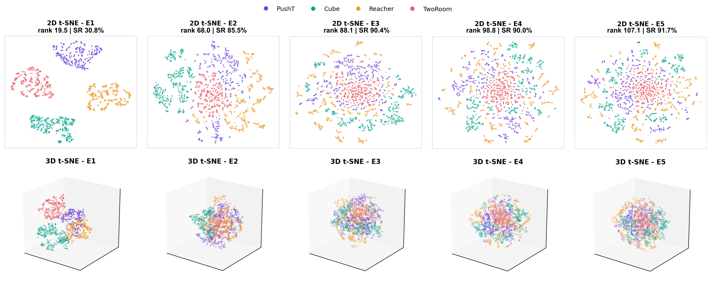
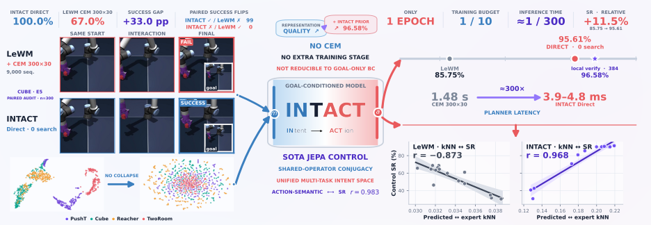
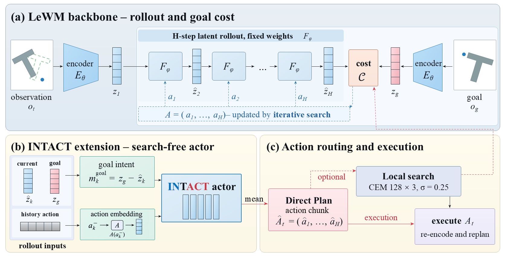
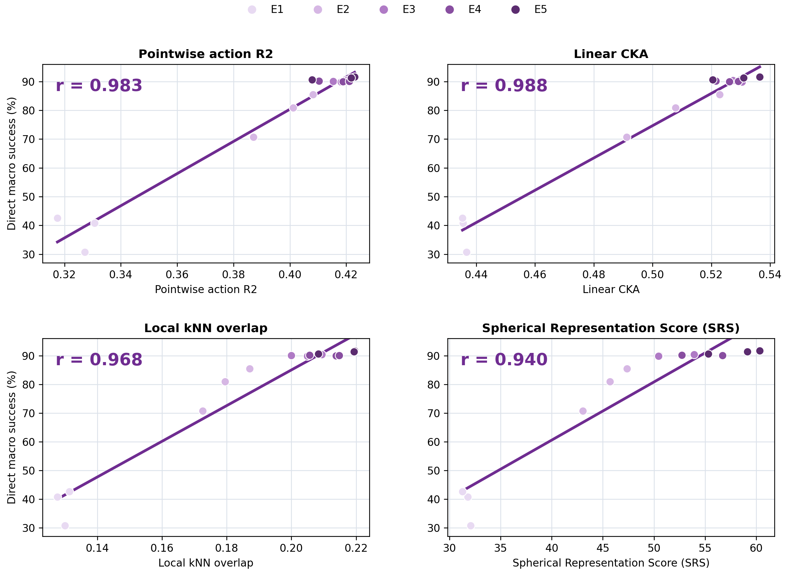

World models · latent intent · direct control

Isomorphic Intent-to-Action Learning for Search-Free World Models
World models already learn what actions do. INTACT teaches the same representation which action realizes a requested latent change.
Unified-task JEPA representation geometry, from initialization to outcome.
Follow the same fixed observations from PushT, Cube, Reacher, and TwoRoom through 7,075 measured training states. Compare complete collapse, partial collapse, and a well-formed outcome in independently fitted 2D and 3D t-SNE.
Loading trajectory metadata.
Measurement note. Every colored point tracks the same fixed observation through training. Each projected frame is robustly normalized to expose morphology, so absolute projected radius is not compared. t-SNE is qualitative evidence about local neighborhoods; effective rank and mean pairwise cosine are computed in the original high-dimensional latent space.

A world model should not need broad search to express control knowledge it already learned.
Forward latent models learn the conditional “given this action, what changes?” Goal-conditioned control then numerically inverts that knowledge with thousands of candidate sequences. This creates a representation-control asymmetry: action shapes the latent during training, but deployment begins again from generic proposals.
Every action-labelled transition already contains the missing supervision. It identifies a state-conditioned motion intent and the action that realizes it. INTACT exposes that relation as a first-class interface, trained end to end with the forward JEPA.

Two intent families. One conditional action law.
A real successor provides a physically grounded intent that is unavailable before acting. A future goal provides the condition available at deployment, but it is not a one-step successor. INTACT gives both families the same typed predictor graph while retaining their different causal roles.
mtlocal = zt+1 − zt
successor attached
mtgoal = sg(zg) − zt
goal detached
The predictor receives the same four-slot grammar in both calls: current state, first-order intent, the matched state-intent interaction, and previous-action context. There is no pointwise loss forcing the local and goal endpoints to coincide.

Isomorphic between calls. Intact across representation and control.
Local and goal calls use the same parameter-labelled backbone-input graph.
Supported motion-intent families correspond through the action-law semantics induced by one predictor.
Action-effective information survives the RGB-to-latent bottleneck without retaining every nuisance.
The relation between latent intent families and their action families survives direct readout.
One epoch makes broad action search optional.
Task-specific INTACT is trained end to end for one full-data epoch. Direct evaluates no candidate sequence and makes no terminal latent-cost call. Guarded A keeps the coherent Direct plan as its center and verifies only a small local neighborhood.
| Task | Direct · 0 | Guarded A · 384 | Published LeWM |
|---|---|---|---|
| PushT | 87.44 ± 1.26 | 91.56 ± 0.69 | 96.0 ± 4.0 |
| Cube | 100.00 ± 0.00 | 99.67 ± 0.33 | 74.0 ± 3.0 |
| Reacher | 97.33 ± 0.00 | 97.56 ± 0.51 | 86.0 ± 5.0 |
| TwoRoom | 97.67 ± 1.20 | 97.56 ± 1.26 | 87.0 ± 2.5 |
| Macro | 95.61 ± 0.59 | 96.58 ± 0.44 | 85.75 |
INTACT values average three independently trained models per task, each evaluated with three 100-episode seeds. Published LeWM retains its own 10-epoch CEM protocol and is landscape context rather than a paired significance control.
Controller first, search second.
One epoch turns a latent goal into a coherent action plan. Search becomes a small local verifier, not the controller itself.
One visual encoder, four control domains.
At E5, Goal-displacement INTACT reaches 91.22 ± 0.51% Direct macro SR with one encoder shared across PushT, Cube, Reacher, and TwoRoom. The matched shared LeWM baseline reaches 66.17 ± 2.67% using CEM 300×30.
Disabling every INTACT action head still raises actor-off pure-CEM macro to 70.08 ± 1.13%. Representation shaping is measurable before direct readout, while restoring the learned interface supplies most of the closed-loop gain.
Control follows action-family correspondence, not latent spread alone.
At a fixed current state, two endpoint conditions are equivalent when they induce the same expert action law. This conditional action quotient predicts that local and global agreement between predicted and expert action families should track control.
The fixed-history diagnostic cohort contains three training seeds at each E1–E5 checkpoint. These correlations are post-hoc measurements of representation-to-control agreement; they are not additional training objectives.
Correspondence becomes predictive during training.
Intent and action families evolve together.

Keep the world-model conversation moving.
Join an open community around JEPA, LeWM, INTACT, representation learning, and efficient robot control. Follow new results, compare reproductions, challenge assumptions, and bring early ideas.
Open the Community page Permanent entryPersonal WeChat and email invitation routes live behind this page.
Permanent entryPersonal WeChat and email invitation routes live behind this page.
From the paper to runnable training and evaluation.
Definitions, controlled comparisons, and machine-readable result records.
Task-specific and shared-encoder recipes with explicit inference modes.
Published separately with manifests and SHA-256 verification.
Versioned dependencies, data checks, smoke runs, and checkpoint-compatible evaluation.